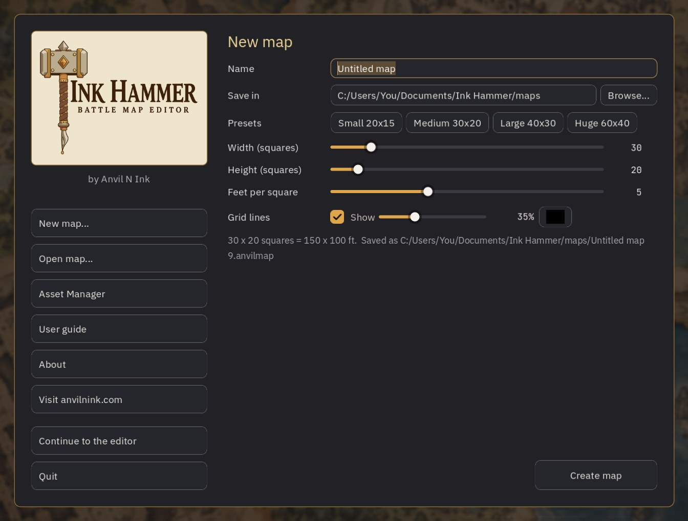

Install and first launch
Ink Hammer runs from its own folder. There is no installer: unzip it and start it.
Ink Hammer has no installer and changes nothing on your system: you unzip the folder and run Ink Hammer.exe. Because this beta is not code-signed yet, Windows SmartScreen shows a blue box saying Windows protected your PC and "unknown publisher". Click More info, then Run anyway. You only need to do this once. Some antivirus programs may also ask about it; allow Ink Hammer.exe from the folder you unzipped. Only run a copy you downloaded from the official store page (itch.io, Payhip or Steam).
Ink Hammer is in development. Expect bugs and things that don't work yet. Updates, including 1.0, may change or break maps you make now: keep backups (each save also keeps a .bak of the previous one). The first time you start it you are asked to read and accept the license agreement (also in EULA.txt and Help > License agreement).
Install
- Download three files from the store page: the Ink Hammer app, Anvil Pack Core (textures, walls, paths, doors) and Anvil Pack Items (props and furniture).
- Unzip all three to the same place you keep, for example Documents. Each zip has an Ink Hammer folder inside, so they end up in one Ink Hammer folder (the packs go into Ink Hammer\Modules). Choose Replace if Windows asks.
- Open the folder and double-click Ink Hammer.exe.
- If Windows shows Windows protected your PC, click More info, then Run anyway. This appears because the beta is not code-signed yet.
If a pack is missing, Ink Hammer says so when it starts, and maps show pink squares where that art goes. Another way to add a pack (or any module you buy): drop its .zip into Documents\Ink Hammer\Modules and restart. It installs once and the zip moves to _installed.
Updating
Help > Check for updates... says whether a newer version is out and opens the download page. New in 0.9.24
Unzip the new app zip over your Ink Hammer folder and choose Replace. The art packs and your own imports stay as they are. Download a pack again only when the release notes say it changed.
What is in the folder
| Folder or file | What it holds |
|---|---|
| Ink Hammer.exe | The program. |
| Modules | The art packs (anvilnink.pack-core, anvilnink.pack-items) and the built-in tool plugins. Turn any of them off in File > Modules... |
| Anvil Pack | Your own imports, saved prefabs and wall or path sets. Images you copy in here show up the next time you start Ink Hammer (or after Rescan). |
| maps | Where new maps are saved unless you pick another folder. |
| exports | Where exports go unless you pick another folder. |
| mcp | The connector that lets Claude work in Ink Hammer (see Connect Claude). |
| docs | This guide. Open docs\index.html any time, or use Help > User guide in the app. |
What you need
- Windows 10 or 11 (64-bit).
- A graphics card with Vulkan support (most cards from the last ten years; DirectX 12 is used if Vulkan is missing). Water and lighting are drawn on the graphics card, so a dedicated card is smoothest. On a laptop with built-in graphics, see The editor feels slow.
The start screen
Ink Hammer opens on the start screen. Click the numbers to see what each part does.
- New mapOpens the new map form: name, folder, size in squares and grid look.
- Open mapOpens any
.anvilmapfile on your computer. - Asset ManagerBrowse, tag and import art before you start a map.
- User guideOpens this guide in your browser. It is also in Help > User guide.
- Continue to the editorGoes to the editor with an empty map, or the map you had open.
- Recent mapsYour last maps with a small picture and their size. Double-click one to open it. Maps joined as floors or side maps show as one card (the main map, with how many maps and scenes it holds); open it to pick any floor, side map or scene.
Make a new map

- Name and Save in: the map is saved straight away, so it has a file from the start.
- Presets set common sizes. One square is 256 pixels in the map, the same scale Dungeondraft uses.
- Feet per square is usually 5. It sets how long shadows are and how heights read.
- Grid lines sets whether the grid shows, how strong it is and its colour. You can change all of it later in File > Settings.
Click Create map and the editor opens. Next: Your first map.
Saving and lost work
- Ctrl+S saves. The previous version is kept next to it as a
.bakfile. - Ink Hammer also autosaves a separate copy every 2 minutes. It never overwrites your map file.
- If Ink Hammer closes without saving (a crash or a power cut), the next start shows Recover unsaved work. Recover opens the autosaved copy; save it to keep it. Discard throws the copy away.
Use File > Package map with its assets. It writes one folder with the map and every piece of art it uses, so it opens complete anywhere.